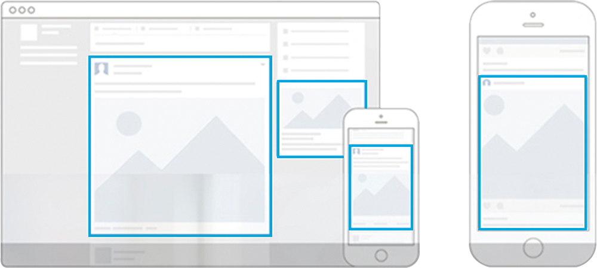
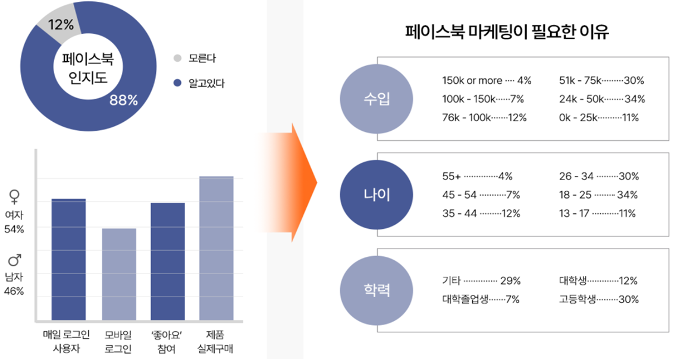

페이스북/인스타그램, 유튜브, 당근마켓 등에 노출되는 콘텐츠형 광고 SNS을 이용하는 유저들에게 퍼포먼스 및 브랜드 인지도를 함께 높일 수 있는 광고매체
* CPM방식을 통한 낮은비용으로 높은 노출 및 도달을 달성할 수 있는 효과적인 광고
Marketing Part
페이스북 마케팅 Part
페이스북은 전 세계적으로 가장 많은 사용자를 보유한 실명 기반의 SNS이며, 인터넷 사용자가 가장 많은 시간을 보내는 SNS입니다. 페이스북을 이용하여 고객과 빠르게 커뮤니케이션을 해줌으로써
브랜드 홍보 지원을 할 수 있도록 활성화 시켜주는 것이 중요합니다. 글로벌 엠아이지는 페이스북에 게재되는 담벼락 글수, 친구, 좋아요 수치를 설정하여 체계적으로 관리합니다.
Advantages
페이스북 광고의 장점
Reason
페이스북 마케팅이 필요한 이유
페이스북이 마케팅이 필요한 이유는 통계자료부터 트렌드, 광고효과까지 다양합니다. 아래 내용을 확인하신 뒤 글로벌 엠아이지와 함께 페이스북 광고를 시작해보세요. 다양하고 깊은 경험으로
광고효과를 극대화 해드리겠습니다.

페이스북 광고 노출위치
Facebook Marketing
페이스북을 통해 새로운 제품 홍보 및
글로벌 마케팅이 가능합니다. 지금확인하세요!
페이스북이 마케팅이 필요한 이유는 통계자료부터 트렌드, 광고효과까지 다양합니다. 아래 내용을 확인하신 뒤 글로벌 엠아이지와 함께 페이스북 광고를 시작해보세요.
다양하고 깊은 경험으로 광고효과를 극대화 해드리겠습니다.

SNS 이용률 및 성/연령별 SNS 이용 서비스
User Statistics
페이스북 사용자 통계
페이스북이 마케팅이 필요한 이유는 통계자료부터 트렌드, 광고효과까지 다양합니다. 아래 내용을 확인하신 뒤 글로벌 엠아이지와 함께 페이스북 광고를 시작해보세요. 다양하고 깊은 경험으로
광고효과를 극대화 해드리겠습니다.
Targeting
실제 사용자 정보를 활용한 타겟팅
실제 사용자 정보를 활용한 타겟팅 (지역,나이,성별,결혼유무,관심사,학업&직업)광고가 가능합니다.
Targeting
페이스북 타겟팅 유형
페이스북 유저 데이터 기반으로 쿠키/IP기반의 타겟팅보다 정확도가 높은 편이며, 다양한 타겟 그룹을 원하는 조합으로 세팅 이 가능하다는 장점이 있음.
Sponser AD
가장 트렌디한 소셜미디어 플랫폼 페이스북&인스타그램 스폰서 광고
연령/지역/관심사 등 가입자의 정보를 바탕으로 한 타겟팅 등 정밀한 타겟팅 가능 뉴스피드 내 콘텐츠와 같은 형태로 노출되는 NativeAD로 광고 거부감 낮고 사용자 반응 (댓글, 좋아요 등) 유도
용이 (*페이스북 국내 이용자수 : 약 1,700만명 | 인스타그램 국내 이용자 수 : 약 1,100만명)
SNS 스폰서 광고 특징
로그인 방식의 사람(소비자) 중심 플랫폼
정교한 타겟팅 기능(옵션) 매체 유일
비즈니스 목표에 따른 자동화된 최적화 솔루션
목표에 적합한 지표 및 분석툴 제공
타겟팅 항목
지역
성/연령
직장
관심사
리타겟팅
AD Type
링크와 슬라이드광고
페이스북광고는 링크광고와 슬라이드 광고 중 원하시는 유형을 선택하여 진행할 수 있습니다. 하시고자 하는 광고 목적에 맞는 유형을 선택해주세요.
Pixel Data
픽셀은 제대로 된 페이스북 광고의 필수요소!
웹사이트에 설치하여 페이스북 광고 캠페인의 직접적인 효과를 측정하는 프로그램 코드 타겟 유입을 유도해 전환으로 이어지는 행동 패턴을 기대할 때 꼭 필요한 요소
AD Data
Facebook 광고 데이터
Process
광고집행 프로세스
01
현황분석
Before 캠페인 분석 업종·채널·시장분석 서비스·사이트·솔루션체크
02
전략수립
목표 KPI설정 목표·타겟·전략 설정 목표별 콘텐츠 기획
03
광고운영
픽셀 설치 광고 셋팅 소재제작
04
효율분석/성과측정
타겟별, 소재별 광고효율 측정 광고 성과 보고
05
인사이트 도출
캠페인 경과 분석 인사이트 도출 향후 전략 수립
Youtube marketing
Youtube 광고
잠재고객이 YouTube에서 동영상을 시청하거나 검색할 때 광고를 게재하고
잠재고객이 관심을 보일 때만 비용을 지불하면 되는 광고